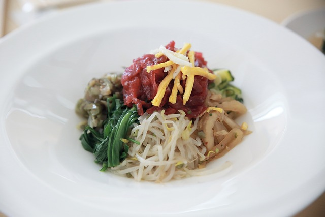
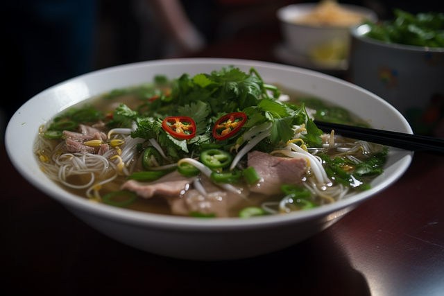
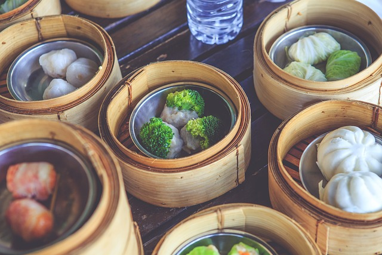

Food
Los Angeles is a culinary melting pot, renowned for its vibrant and diverse food scene that mirrors its multicultural population. The city's ethnic food offerings range from authentic street food to high-end dining experiences, showcasing flavors from around the globe. In neighborhoods like Koreatown, Little Tokyo, and Boyle Heights, you can find traditional dishes that celebrate the rich heritage of their communities. The food culture in LA thrives on innovation and authenticity, making it a haven for food enthusiasts eager to explore a variety of cuisines. Here are four popular ethnic dishes you can find in Los Angeles:
- Tacos Al Pastor:
Originating from Mexico, these tacos feature marinated pork cooked on a vertical spit, then sliced thin and served with pineapple, cilantro, and onions on a soft corn tortilla.

- Bibimbap:A Korean dish consisting of a bowl of warm rice topped with assorted vegetables, sliced meat, a raw or fried egg, and gochujang (chili pepper paste), all mixed together just before eating.
- Pho:A Vietnamese noodle soup with a fragrant broth made from beef or chicken bones, featuring rice noodles, fresh herbs, and thinly sliced meat, usually served with lime, bean sprouts, and basil.
- Dim Sum:A Chinese cuisine style where small, bite-sized portions of food are served in steamer baskets or on small plates, including a variety of dumplings, buns, and other savory treats, perfect for sharing.